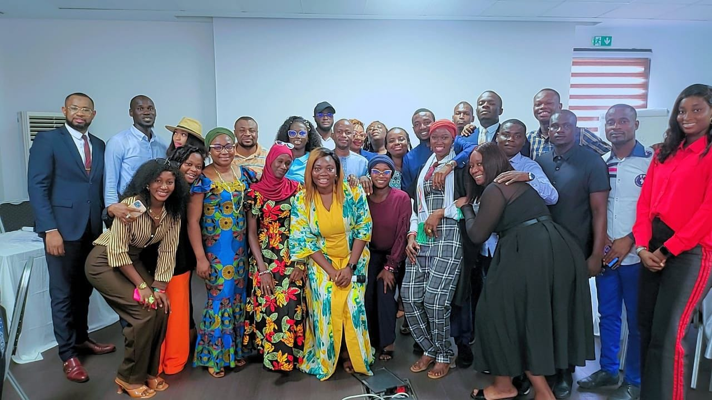

L’IGD a pour mission de promouvoir la démocratie, les droits humains et le développement humain durable en Afrique. Ses objectifs stratégiques reposent sur le postulat selon lequel l’avenir du continent dépend des jeunes et des femmes engagés et attachés aux idéaux de démocratie et de droits humains.
À cet effet, l’Institut met en œuvre une logique d’intervention scientifique afin d’offrir, au niveau national et régional, des programmes de renforcement des capacités et de production de connaissances.

L’IGD a pour vision de devenir un institut de référence, qui influence le développement, la démocratisation, la sécurité et la stabilité des pays africains, ainsi que leur intégration, à travers le renforcement des capacités des jeunes et des femmes, la production de connaissances scientifiques, la création de réseaux et le plaidoyer.
2022–2027
Plan stratégique
3
Axes stratégiques
National +
Régional
1
Objectif général
Certification des services, respect des délais, qualité, procédures normées, réactivité et proactivité.
Tolérance zéro face à la corruption : fiabilité des informations, respect de la parole donnée, honnêteté, sincérité.
Diffusion des méthodes de travail, explication des décisions, partage des règles et des bonnes pratiques.
Amélioration continue des méthodes pour accroître l’impact et proposer des solutions nouvelles.
Concertation et implication des collaborateurs et partenaires dans la décision et l’exécution des activités.
Conscient de sa vision et de sa mission, l’IGD s’est doté d’un plan stratégique 2022–2027. L’objectif général de ce plan est de contribuer au renforcement de la gouvernance démocratique à travers l’analyse des politiques publiques de développement et le renforcement des capacités politiques des femmes et des jeunes d’Afrique.
L’IGD ambitionne de se positionner comme un « think tank » de référence en Afrique de l’Ouest, en produisant des connaissances utiles pour les décideurs, à travers des études sur les thématiques émergentes et l’analyse rigoureuse des transformations structurelles affectant les sociétés africaines, notamment les jeunes.
Domaine de prédilection de l’IGD, le renforcement des capacités a permis à l’Institut de se positionner comme un acteur crédible de la formation des acteurs de la gouvernance démocratique, notamment les femmes et les jeunes leaders. L’IGD poursuivra ses actions de formation et d’accompagnement.
Axe transversal visant à renforcer l’administration et la gestion de l’Institut, afin d’optimiser la mise en œuvre des activités opérationnelles des deux premiers axes. Cet axe conditionne l’efficacité globale des interventions de l’IGD.